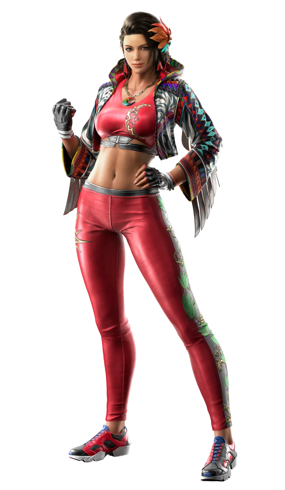
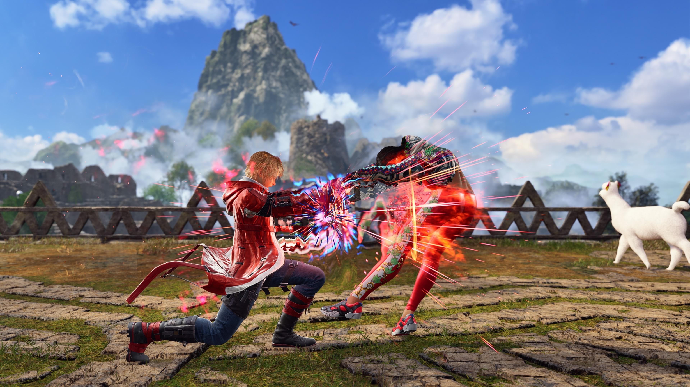
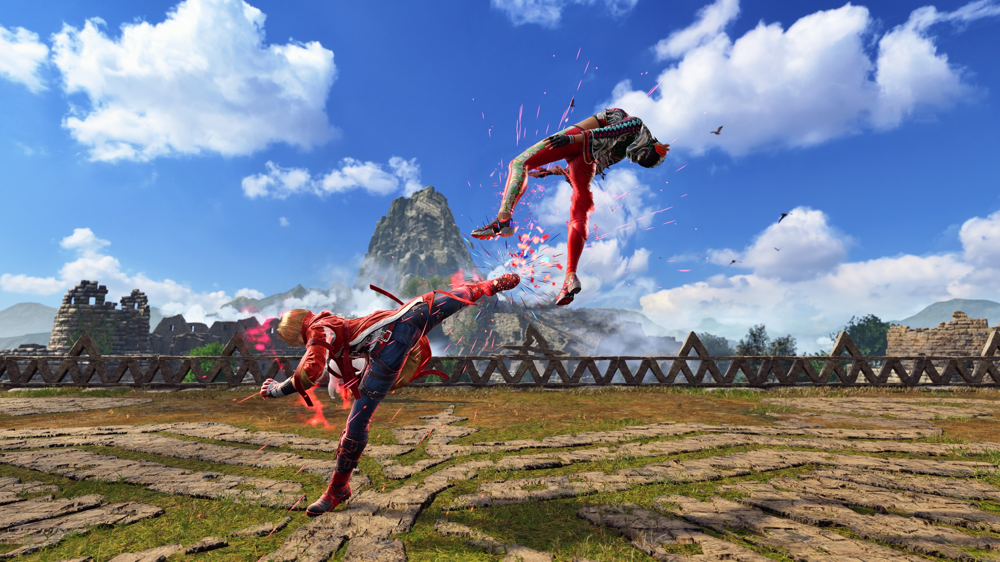

Lian Tan Jin Ji Du Li: A fast combo that transitions into their Jin Ji Du Li stance

You're opponent is Azucena Milagros Ortiz Castillo, a famous coffee maker and an exemplerary fighter in Peru. What move would you start off with?
Lian Tan Jin Ji Du Li: A fast combo that transitions into their Jin Ji Du Li stance

